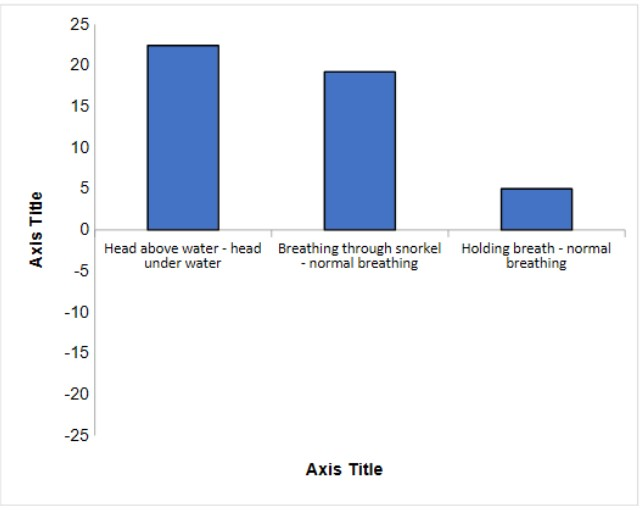

Experiment
The diving reflex
In this experiment participants were asked to:
- Sit for 30 seconds with the face above water (baseline).
- Hold breath for 40 seconds (above water).
- Sit again for 30 seconds.
- Hold breath for 40 seconds with the face submerged.
- Sit for 30 seconds.
- Breathe through a snorkel for 30 seconds while sitting.
- Breathe through the snorkel for 30 seconds with the face above water.
- Breathe through the snorkel for 30 seconds with the face submerged.
- Sit quietly for 1 minute.
The results:
Mean Scores BPM
Head above water 86
Holding breath above water 81
Holding breath under water 65
Under water with snorkel 80
Mean differences
Head above water - head under water -22
Breathing through snorkel - normal breathing 19
Holding breath - normal breathing -5

These results indicate that holding the breath with the face submerged reduced heart rate the most, followed by breathing through the snorkel.
Holding the breath alone, also known as apnea, was the least effective in decreasing heart rate.
The diving reflex appears to be primarily triggered by facial immersion in water, although the response can be slightly enhanced by breath-holding.
This may explain the difference in heart rate between breathing underwater and not breathing. Based on the data, the effect seems to be additive.
Research suggests that the diving reflex activates the parasympathetic nervous system, which reduces heart rate and overall bodily function, while redirecting blood flow and conserving heat toward the body'
s core to extend the time underwater (Godek & Freeman, 2025).